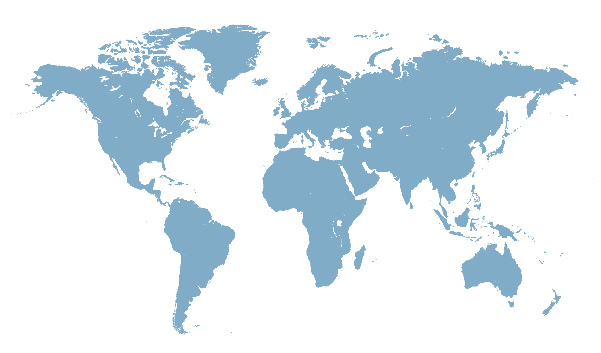
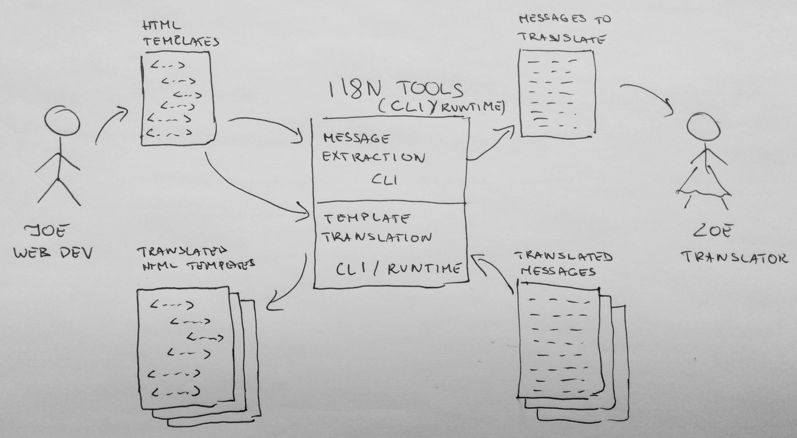

NG-NL, February 13, 2015 - Amsterdam
Going global
with AngularJS applications
NG-NL, February 13, 2015 - Amsterdam
I'm Pawel
I'm into climbing and open-source
GH: pkozlowski-opensource / @pkozlowski_os
What does it mean to go global?
i18n / i10n
“Internationalization (i18n) is the process of designing a software application so that it can potentially be adapted to various languages and regions without engineering changes.”
“Localization (i10n) is the process of adapting internationalized software for a specific region or language by adding locale-specific components and translating text.”
Today
there is some stuff in the core...
Locale-specific data
Date and number formats, names of days, months etc.
- Available in the i18n sub-folder
- Data source: CLDR
- Extracted from the closure library
- Generated "on demand"
Locale-specific data usage
<script src="lib/js/angular-locale_nl-nl.js"></script>
<script>
angular.module('app', ['ngLocale'])
...
</script>
Formatting dates
{{now | date:'fullDate'}}
Formatting numbers
{{1213123.2454 | number}}
{{1213123.2454 | number}}
Formatting currency
{{1213123.2454 | currency}}
{{1213123.2454 | currency}}
Insanity warning!
Pluralization
<ng-pluralize count="personCount"
when="{'0': 'Nobody is viewing.',
'one': '1 person is viewing.',
'other': '{} people are viewing.'}">
</ng-pluralize>
Today
the community needs to work out several pieces
mainly translations...
"Run-time" translations
with angular-translate or similar
<h1>{{ 'TITLE' | translate }}</h1>
<h1 translate="TITLE"></h1>
<h1>{{:: 'TITLE' | translate }}</h1>
"Build-time" translations
Tomorrow
Let's imagine a better World together!
There are few problems to solve
- Build-time solutions are cumbersome to setup and operate
- Run-time solutions suffer from some perf-problems
- It's a lot of work!
I18n add tons of work
especially if done as the afterthought
<h1>Some title</h1>
<h1>{{ 'TITLE' | translate }}</h1>
- Extracting and naming messages to translate
- Modifying templates
- Sending things over to translation
- Converting translated messages to the app's format
There is ongoing work
in 1.4/2.0 time-frame
Let's be (very) lazy!
<h1>{{ 'TITLE' | translate }}</h1>
<h1 i18n>Some tilte</h1>
<h1>Some tilte</h1>
Benefits
<h1 i18n>Some tilte</h1>
- Easy to introduce translations later
- No thinking about message names!
- Meaningful previews
- More context for translators
Let's be nice to translators
<h1 i18n="This is document's title">
Some title
</h1>
Not only syntax
but rather the entire process!
Let's do it together, please!
- Things a cooking in the angular/i18n repo
- You can read more in the design docs
- All the previous meetings were recorded
- There is enough work for everyone (and more)
- We are inclusive and happy to chat!
More details to come